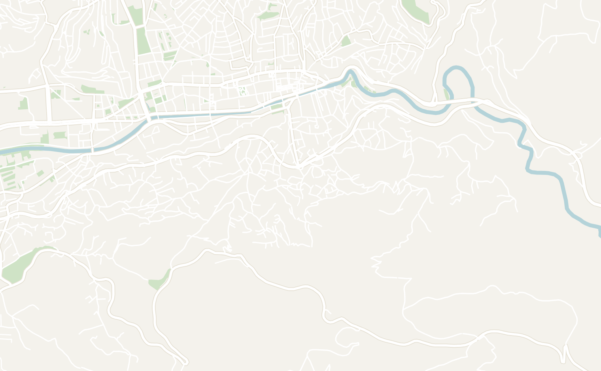
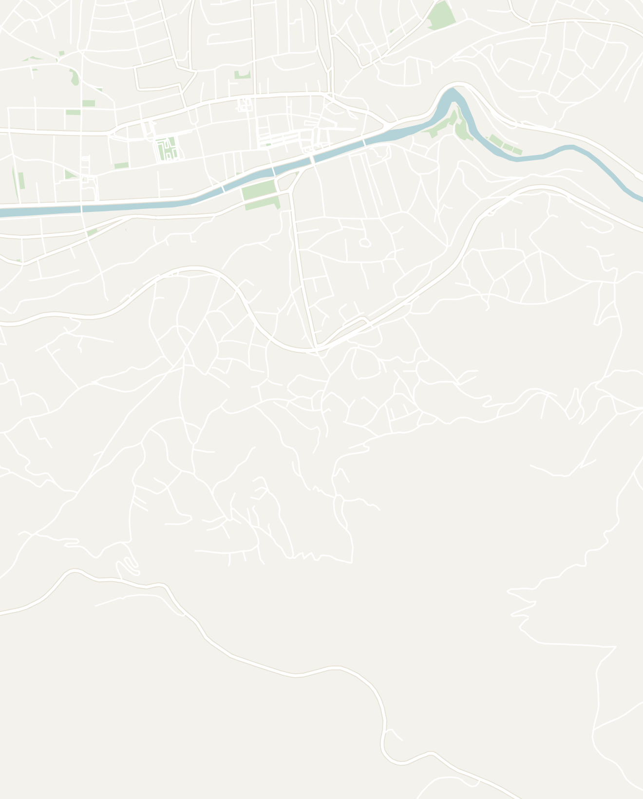

General
Bosnia is truly a hidden gem and one of the most underrated countries in Europe. A unique blend of Balkan and Muslim culture, Bosnia has a very unique culture accompanied by breathtaking scenery and a complex past. The country is composed of 3 different ethnic groups: Bosniaks, Serbians and Croatians and in fact has 3 presidents today. It is a fascinating country to visit to learn about the history ranging from the Austro-Hungarian empire, Ottoman empire, Yugoslavia, the Bosnian War and continuing geopolitical tensions. Bosnia's medieval sites are often overlooked and many of them felt straight out of a fantasy novel.
I based myself in the capital Sarajevo for a week and explored the rest of the country via day trips. I'd recommend spending 5–6 days in the country to fully explore and understand the complexities of Bosnian culture.
- Transport — Sarajevo itself was very walkable. I used a local ride sharing app called mojTaxi which offered affordable rides. Outside of Sarajevo, the bus system isn't very robust with a limited schedule so I'd recommend booking day tours or renting a car
- Hospitality — Bosnian people were some of the most friendly people that I've come across in my travels. Whether it is a random person on the street, a taxi driver or tour guide, Bosnians were extremely open and easy to talk to. They also had a dark sense of humor I really appreciated
-
Food — Bosnia also has by far the best food in the Balkans so make sure to branch out and try new dishes. The dishes are very similar to other countries in the Balkans, but somehow so much better. Some dishes to try are:
- Burek — flakey pastry stuffed with meat covered with yogurt sauce
- Cevapi — little spiced sausages, often served with fries
- Sarma — cabbage rolls stuffed with rice and meats
- Bosnian coffee — similar to Turkish coffee served with a cigarette
- Klepe — Bosnian-style dumplings
- Language — Bosnian is the official language (although it is essentially the same as Serbo-Croatian) and utilizes both the Latin and Cyrillic alphabet. Almost everyone I met was fluent in English and it was easy to get around
- Affordability — since it isn't a popular tourist destination by European standards, Bosnia was very affordable. A full meal may only cost you $5
Sarajevo
3–4 days recommendedSarajevo is one of my favorite cities in the world. Home to centuries of fascinating history, Sarajevo has changed hands many times between the Austro-Hungarian empire, Ottoman empire, Yugoslavia and Bosnia today. The city is covered in interesting historical sites and you can even see the bullet holes from the Bosnian War on many of the buildings today. The city is very walkable and easy to explore.
-
Old Town (Baščaršija) — Ottoman-style bazaar with little cafes, copper shops and restaurants. It remains very well preserved and atmospheric
- Sebilj Fountain — the wooden fountain in the center of Baščaršija, always surrounded by pigeons. The classic Sarajevo photo and an important reminder of the city's Ottoman past
- Gazi Husrev-beg Mosque — the main mosque in old town that still operates as an active mosque
- City Hall (Vijećnica) — a beautiful Austro-Hungarian building with a stunning stained glass dome, located right on the river. It has rotating art and historical exhibits inside. While I was there, they had an exhibit on Srebrenica during the 30th anniversary of the genocide
-
Take a cable car up Trebević Mountain — take the cable car from the town center up to Trebević Mountain for an incredible view overlooking the entire city
- 1984 Olympic Bobsled track — it was used in 1984 when Sarajevo hosted the Winter Olympics. Less than a decade later, the bobsled was being used by snipers during the Siege of Sarajevo. Now, the area is overgrown and the bobsled track is covered in moss and graffiti. You can walk for a few kilometers down the bobsled track, an experience hard to find elsewhere!
- While you're there, do a short hike to Bistrik Tower from the end of the bobsled track, a space observation tower from the Yugoslav era, since abandoned and filled with bullet holes from the Bosnian War
-
Site of the Assassination of Archduke Franz Ferdinand — World War I actually started in Sarajevo when a Bosnian Serb assassin named Gavrilo Princip killed Archduke Franz Ferdinand of the Austro-Hungarian Empire. You can go to the actual site where this happened where they have imprints of his feet. The event cascaded into a series of the two most consequential wars in history so it is surreal to be in the exact spot
- It lies right next to the Sarajevo Museum and the Latin Bridge so visit those while you're in the area
- Kovači Cemetery — walk up through the military cemetery overlooking Sarajevo, characterized by the seas of traditional muslim gravestones (white pointy grave stones). It has one of the best views overlooking Sarajevo and makes for a good sunset spot
- Yellow Fortress — climb further up the hill for another good viewpoint and sunset spot in Sarajevo
-
Museums
- Museum of Crimes Against Humanity and Genocide — the most impactful museum I've been to. It covers the Bosnian genocide 1992–1995 in brutal personal detail using actual clothing, notes and belongings of victims making the stories more real and heart-wrenching
- Siege of Sarajevo Museum — covers the horrific four year Siege of Sarajevo, the longest siege in history, lasting over 1,425 days. You can buy a joint ticket with the Crimes Against Humanity museum
- Tito Museum (Muzej Tito) — tiny 2-room museum full of Yugonostalgia and great place to learn about the still-beloved Yugoslavian strongman Josip Broz Tito. No one actually works at museum, you just pay by card, a turnstile opens, Yugoslavian music starts playing and all the lights turn on. It feels like a 1950s wonderland and was a fun, quirky museum experience
- Buregdžinica Sač — absolutely incredible Burek in Sarajevo cooked in a traditional way with a special metal pan and coals. Try the meat Burek with yogurt sauce. It is a very famous place and gets very busy so try to go early before the rush
- Inat Kuća (House of Spite) — restaurant moved brick by brick across the river during Austro-Hungarian construction. Get the Klepe and a Bosnian beer
- Sarajevo Brewery — a historic brewery built during the Austro-Hungarian empire in 1864. The building is a massive and beautifully decorated red complex. The brewery is an important historical landmark in the city as it was the only source of clean water during the 1,425 day Siege of Sarajevo
- ASDŽ Aščinica — cafeteria-style Bosnian home cooking. I enjoyed the buttery mash potatoes, stuffed peppers, dolma and pita. It was great value for the portion size and price
- Ćevabdžinica Zmaj Titova — Recommended by my local tour guide as the best Cevapi in the city. Get 10+ Cevapi, onions and bread for only $4.
- Cafe Slatičarna — a small cafe known for its layered chocolate cream cake called Boem
- Balkan Han Hostel — a very social hostel located near Old Town. They have a happy hour that often turns into a fun night out


Double-tap to open in Google Maps
Day Trips
From Sarajevo, you can easily take many fascinating day trips out of the city to explore the rest of Bosnia. The country is extremely green and home to many beautiful landscapes. I went on two day trips with the tour company named MeetBosnia and I highly recommend both of them:
-
Mostar & Herzegovina Tour — this tour takes you into the southern region of Bosnia known as "Herzegovina," which is populated mostly by Croatians. It is considered the most beautiful region of the country with beautiful mountains and deep blue water. Our tour was led by a guide named Christian who was informative, hilarious and very open for discussion even with darker topics like the Bosnian Genocide or on-going racial tensions in the country. The tour is packed with a bunch of amazing stops:
-
Mostar — a historic Bosnian city, famous for its 16th-century Ottoman bridge called Stari Most, overlooking a gorgeous blue river below. The bridge has become popular among adrenaline junkies who like to dive 25 meters off the center of the bridge (equivalent to diving off a 9-story building)
- Jumping off the bridge requires a special training course. Locals are known to beat up those who jump off without permission!
- Mostar is one of the most popular places in Bosnia so it gets very crowded as many day trippers from Croatia come here. Many people also like to spend the night here, but I felt like I saw most of the town during this day trip
- Konjic — a beautiful little town with a historic Ottoman-era bridge and a river filled with crystal clear mountain water
- Neretva Canyon — the drive from Konjic to Mostar runs through a gorgeous canyon with huge white mountains and deep blue water the whole way down
- Kravica Waterfall — a really nice set of waterfalls with a blue lake you can swim in upfront. It gets really busy in the summer
- Dervish House in Blagaj — white Ottoman house built into the base of a cliff in the middle of nowhere, next to an incredibly blue river. It was an very peaceful area and an interesting stop to learn about the Sufi mystics (a respected Islamic order during the Ottoman empire)
- Počitelj — a pretty hilltop town overlooking the river below. You can explore the abandoned town for hours and there weren't many tourists around
-
Mostar — a historic Bosnian city, famous for its 16th-century Ottoman bridge called Stari Most, overlooking a gorgeous blue river below. The bridge has become popular among adrenaline junkies who like to dive 25 meters off the center of the bridge (equivalent to diving off a 9-story building)
-
Jajce, Travnik & Central Bosnia Tour — a guided day tour that takes you to two former capitals of the Bosnian Kingdom, ancient catacombs, a colorful mosque in Travnik and the best Cevapi in the country! This trip covers a lot more ground and includes a lot more driving than the Mostar trip
-
Jajce — a magical medieval town made of a castle built on top of two waterfalls. It felt like a scene out of a fantasy movie. You can walk around the town and explore. We also stopped by a few places nearby Jajce:
- Pliva Lakes watermills — little medieval-looking huts with little streams and waterfalls flowing underneath, used as corn mills
- Bogomil catacombs — located underneath a church, we visited catacombs of the prehistoric Bogomil people. This was a pre-Islamic Bosnian religion with a cross, sun and moon carved inside
-
Travnik — the last capital of the Bosnian Kingdom before it was taken over by the Ottoman empire in the 15th century
- Travnik Fortress — a medieval town-fortress with an amazing view overlooking the medieval town of Travnik. A great place to watch the sunset
- Šarena Džamija (Ornamented Mosque) — genuinely one of the most beautiful mosques I've seen. On the outside, there are blue domes with light blue flower paintings. Inside, there is a green, yellow and red checkered ceiling with a massive chandelier of curved lightbulbs
- Travnik is known to have the best Cevapi in Bosnia so make sure you stop by Ćevabdžinica Tenić. This restaurant is known for having the best Cevapi in the Balkans and Bosnians will travel across the country just to eat here
-
Jajce — a magical medieval town made of a castle built on top of two waterfalls. It felt like a scene out of a fantasy movie. You can walk around the town and explore. We also stopped by a few places nearby Jajce:
Other Places to Consider
If you're looking for more to do, here are some other places to consider while visiting Bosnia:
- Lukomir — hike to the remote mountain village of Lukomir, which has been continuously inhabited for 600 years and feels completely frozen in time. The hike is 7km and starts in the small town of Umoljani and passes through wildflower meadows with dramatic views over the canyon below. Book a guided tour from Sarajevo since the trails are poorly marked and it's only accessible May to November
- Višegrad and Drvengrad Tour — a 2 hour drive east of Sarajevo, Višegrad is home to a UNESCO-listed bridge with a church nearby. Drvengrad is a small traditional town on the border in western Serbia. Best done as a day trip from Sarajevo
-
Visit the Republic of Srpska — one of two political entities that make up Bosnia and Herzegovina, the Republic of Srpska is a predominantly Serbian Orthodox region with a completely different feel from the Bosnian Federation
- The capital Banja Luka is worth a stop for the medieval Kastel Fortress and river rafting on the Vrbas
- Trebinje in the south is considered one of the most beautiful towns in the country, a quiet Ottoman-era city only 40 minutes from Dubrovnik